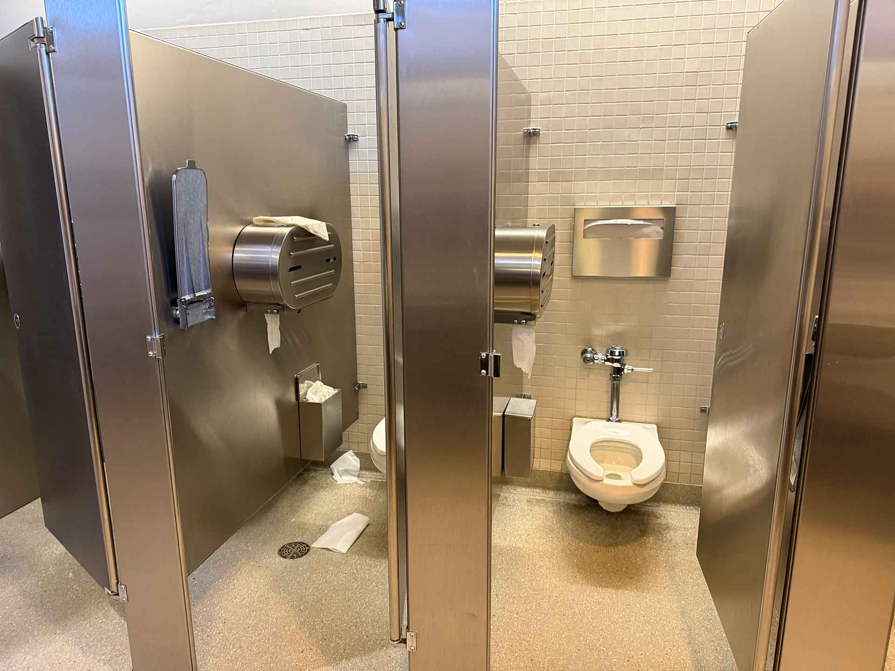

Full Review:
This bathroom is on a pretty popular floor. It's accessible through the elevator, the stairs, and the escalator, unlike all the floors above it, which is only available through the elevator and the stairs. Before entering, I saw that the placard near the bathroom entrance had correct Braille, which is cool (by the way, isn't it so crazy that some institutions outside of SJSU will just… have incorrect Braille? It's super easy to find Braille signs online; I have no idea how one even goes about finding a sign in nonsense Braille outside of a gag site. Though, who the gag would be on is beyond me).

The popularity of this floor is best shown through its bathroom. It was quite a bit dirtier than the other bathrooms, and there were more people present. I struggled a bit to get a proper photo inside because I was trying to avoid rousing their suspicions. Luckily, the vast majority of the mess was just seat cover and toilet paper, though, which sets it above some other bathrooms I've rated on here. The accessible bathroom had a baby changing station and no emergency call button (on what those are and why they're important, check out the links at the bottom).
The bathroom stall, albeit a bit messy, had its typical amenities and a box for period products. However, there was one glaring issue: the bag platform was broken. It was only one bag platform, but it does tell me these things are not quite as sturdy as I'd hope. Fortunately, there was also a bag hook, but I've had problems in the past where my bag sits a bit precariously on the hook. The flush was, as always, pretty loud.
Crater sink. Again.
The 2 mounted soap dispensers worked, which is always a nice treat. The biggest surprise to me were the air dryers all working. I was about to give up on even bothering to check the air dryers when I was startled by a chorus of Dyson air dryers.
As always, I checked the pad and tampon dispensers, and they were stocked. Nice.
This bathroom was a bit dirtier than I liked. For the most part though, it's acceptable but not an ideal bathroom.
As an aside, in the middle of writing this, I decided to look up what the deal was with the crater sinks and learned they were an art installation and commentary on water erosion and its effects on California hills. Each floor, from top to bottom, progressively gets a larger and larger crater to show how water can eat deep into the earth. However, I feel like I'm the only one who's ever organically seen the progression the artist, Mel Chin, intended through this project. Later, looking through my photo gallery, I realized that the thumbs-down photos I took with almost every sink ended up showing the exact progression Chin was exploring. I still have a deep disdain for these sinks on a logistical standpoint, but I figured this was worth sharing in case anyone was ever curious about the deal with those sinks, and I admittedly thought it was pretty cool how my hatred for the sinks ended up proving their point.